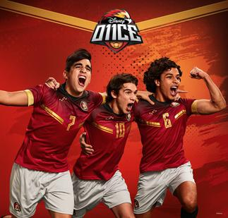

Sport
Nivel 10/10

Sport surgiu em 13 de maio de 1905 onde ali começou a historia de um do maiores clubes do brasil
sport ganhou grandes titulos ao longo do tempo ate hj.
- Campeonato Pernambucano 43 Titulos
- Copa do Nordeste 4 Titulos
- Campeonato Brasileiro Seria A 1987
- Campeonato Brasileiro 1990
- Copa do Brasil 2008


Conheca mais sobre Futebol: Leia+
Lasanha
Nivel 8/8

Lasanha é uma comida incrivel que da muita agua na boca.
Conheça mais sobre lasanha: Leia
Ilha do retiro
Nivel 10/10
A Ilha do Retiro tem capacidade para mais de 35,000 pessoas, onde o sport sedeia os seus jogos
a ilha ja foi palco da seleção brasileira onde jogou com o estados unidos em 11 de novembro 2015
Conheça mais sobre lasanha: Leia+
Codar
Nivel 10/10

O codigo de programação te ajuda a estimular sua criatividade e aprendizado,mas quem pode aprender?
A resposta é: quaquer pessoa de qualquer idade se você ama aprender, inovar ou criar você pode Aprender
Conheça mais sobre Codar Leia+
Serie 11onze
Nivel 10/10

11onze é uma serie de futebol onde o protagonista é gabriel morreti, ele vem
de um interior na argentina chamado Alamo seco, onde ele tem um sonho de ser
o melhor jogador do planeta.
Conheça mais sobre 11onze Leia+